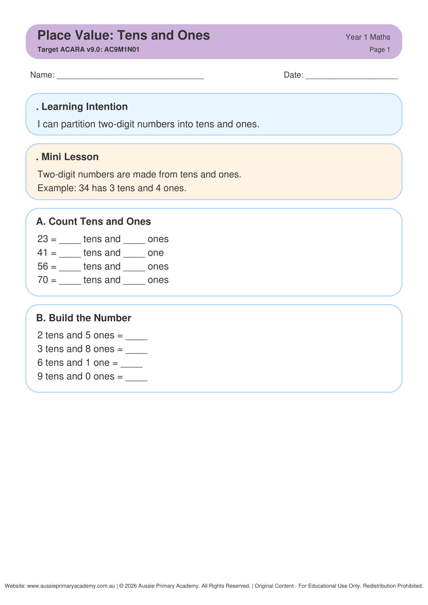

Teacher guidance
Use bundles of ten and single counters to build a number. Ask students to explain what each digit represents and how the tens and ones combine to make the whole number.
Year 1 · Maths · Number · Free Printable
Help Year 1 students understand tens and ones, compare numbers and build place value knowledge to at least 120.
Worksheet Preview

Students will recognise tens and ones and represent numbers to 100 using place value.
AC9M1N02
Partition one- and two-digit numbers in different ways, including partitioning two-digit numbers into tens and ones.
Use base-ten blocks or bundles of ten sticks. Practise expanding numbers (e.g. 34 = 30 + 4).
Practical ways to prepare, support and extend this Year 1 learning.
Use bundles of ten and single counters to build a number. Ask students to explain what each digit represents and how the tens and ones combine to make the whole number.
Choose a two-digit number from a calendar or house number. Ask your child to show it as tens and ones using objects or a quick drawing.
Start with concrete bundles of ten and a small number of ones. Extend by asking students to compare two numbers and explain which has more tens.